TallerNa#
# 1) Exploración inicial de las variables
import pandas as pd
import numpy as np
import matplotlib.pyplot as plt
import seaborn as sns
# Cargar el dataset desde GitHub
url = "https://github.com/Kalbam/Datos/raw/main/base_imputacion_mixta_1000.csv"
df = pd.read_csv(url)
# Vista general de los primeros registros
print("=== Primeras filas ===")
display(df.head())
# Información de estructura
print("\n=== Información general ===")
print(df.info())
# Resumen estadístico de las variables numéricas
print("\n=== Descripción estadística (numéricas) ===")
display(df.describe())
=== Primeras filas ===
| fecha | sexo | ciudad | nivel_educativo | segmento | estado_civil | edad | altura_cm | ingresos | gasto_mensual | puntuacion_credito | demanda | |
|---|---|---|---|---|---|---|---|---|---|---|---|---|
| 0 | 2024-01-01 | F | Medellín | NaN | B | Unión libre | 19.0 | 161.821754 | 3574.753806 | 1832.731832 | 640.465372 | 119.202995 |
| 1 | 2024-01-02 | F | Barranquilla | NaN | B | NaN | 52.0 | 167.819566 | 3163.626815 | NaN | 533.108430 | 124.457874 |
| 2 | 2024-01-03 | M | Bogotá | Secundaria | B | Soltero/a | 38.0 | 165.756219 | 2765.672259 | 1219.535074 | 491.016910 | NaN |
| 3 | 2024-01-04 | F | Bogotá | NaN | B | Casado/a | 57.0 | 160.642670 | 4320.397345 | 1908.324816 | NaN | 129.426792 |
| 4 | 2024-01-05 | M | Cali | Técnico | B | Soltero/a | 67.0 | 151.402909 | NaN | 1887.385697 | 610.213994 | 133.916319 |
=== Información general ===
<class 'pandas.core.frame.DataFrame'>
RangeIndex: 1000 entries, 0 to 999
Data columns (total 12 columns):
# Column Non-Null Count Dtype
--- ------ -------------- -----
0 fecha 1000 non-null object
1 sexo 980 non-null object
2 ciudad 950 non-null object
3 nivel_educativo 900 non-null object
4 segmento 800 non-null object
5 estado_civil 650 non-null object
6 edad 970 non-null float64
7 altura_cm 920 non-null float64
8 ingresos 880 non-null float64
9 gasto_mensual 750 non-null float64
10 puntuacion_credito 500 non-null float64
11 demanda 850 non-null float64
dtypes: float64(6), object(6)
memory usage: 93.9+ KB
None
=== Descripción estadística (numéricas) ===
| edad | altura_cm | ingresos | gasto_mensual | puntuacion_credito | demanda | |
|---|---|---|---|---|---|---|
| count | 970.000000 | 920.000000 | 880.000000 | 750.000000 | 500.000000 | 850.000000 |
| mean | 42.861856 | 167.760096 | 3681.294745 | 1687.810749 | 599.077500 | 160.305759 |
| std | 14.621382 | 9.275530 | 1079.326096 | 582.070174 | 79.828186 | 25.357794 |
| min | 18.000000 | 140.000000 | 487.662547 | 100.000000 | 373.657944 | 99.875828 |
| 25% | 30.000000 | 161.488768 | 2999.416229 | 1309.239768 | 544.467843 | 139.505538 |
| 50% | 43.000000 | 167.714614 | 3669.620507 | 1676.193764 | 599.692595 | 160.721251 |
| 75% | 55.000000 | 173.999069 | 4375.093656 | 2063.260990 | 653.345068 | 181.100754 |
| max | 69.000000 | 195.766921 | 7016.246936 | 3532.593603 | 823.539585 | 222.093047 |
from scipy.stats import kstest
import numpy as np
titulos = df.select_dtypes(include=[np.number]).columns.tolist()
for col in titulos:
datos = df[col].dropna()
stat_col, p_col = kstest(datos, "norm", args=(datos.mean(), datos.std(ddof=1)))
print(f"{col} -> KS = {stat_col:.4f}, p = {p_col:.4f}")
edad -> KS = 0.0728, p = 0.0001
altura_cm -> KS = 0.0225, p = 0.7320
ingresos -> KS = 0.0192, p = 0.8950
gasto_mensual -> KS = 0.0183, p = 0.9589
puntuacion_credito -> KS = 0.0175, p = 0.9974
demanda -> KS = 0.0503, p = 0.0260
Prueba de normalidad (Kolmogorov–Smirnov)#
En este bloque se aplica la prueba de Kolmogorov–Smirnov (KS test) a todas las variables numéricas del dataset con el fin de evaluar si siguen una distribución normal:
Selección de variables: Se extraen todas las columnas numéricas del DataFrame.
Si el valor-p < 0.05, se rechaza la hipótesis nula de normalidad, lo que indica que la variable no sigue una distribución normal.
Si el valor-p ≥ 0.05, no se rechaza la normalidad, por lo que la variable puede considerarse aproximadamente normal.
-Obtenemos que edad y demanda no son normales mientras que el resto de variables numericas lo son
pd.DataFrame(df.columns, columns=["Nombres de variables"])
| Nombres de variables | |
|---|---|
| 0 | fecha |
| 1 | sexo |
| 2 | ciudad |
| 3 | nivel_educativo |
| 4 | segmento |
| 5 | estado_civil |
| 6 | edad |
| 7 | altura_cm |
| 8 | ingresos |
| 9 | gasto_mensual |
| 10 | puntuacion_credito |
| 11 | demanda |
total = len(df)
null_counts = df.isna().sum()
null_percent = (null_counts / total) * 100
missing_summary = pd.DataFrame({
"Nulos": null_counts,
"Porcentaje (%)": null_percent.round(2)
})
missing_summary_sorted = missing_summary.sort_values("Porcentaje (%)", ascending=False)
print("=== Resumen de valores nulos ===")
print(missing_summary_sorted)
plt.figure(figsize=(8,5))
sns.barplot(y=missing_summary_sorted.index,
x=missing_summary_sorted["Porcentaje (%)"],
palette="viridis")
plt.title("Porcentaje de valores nulos por variable")
plt.xlabel("Porcentaje (%)")
plt.ylabel("Variable")
plt.show()
=== Resumen de valores nulos ===
Nulos Porcentaje (%)
puntuacion_credito 500 50.0
estado_civil 350 35.0
gasto_mensual 250 25.0
segmento 200 20.0
demanda 150 15.0
ingresos 120 12.0
nivel_educativo 100 10.0
altura_cm 80 8.0
ciudad 50 5.0
edad 30 3.0
sexo 20 2.0
fecha 0 0.0
C:\Users\migue\AppData\Local\Temp\ipykernel_44304\1428512382.py:18: FutureWarning:
Passing `palette` without assigning `hue` is deprecated and will be removed in v0.14.0. Assign the `y` variable to `hue` and set `legend=False` for the same effect.
sns.barplot(y=missing_summary_sorted.index,
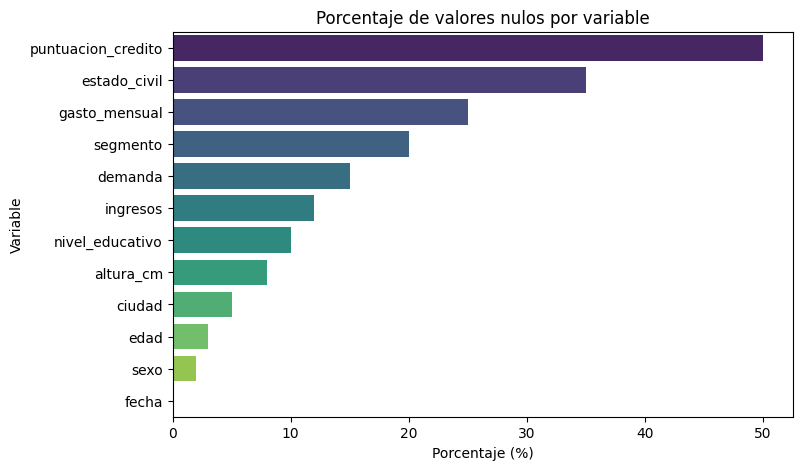
Análisis de valores faltantes#
En este bloque se identifican y visualizan los valores nulos en el dataset:
Conteo y porcentaje de nulos:
Se calcula para cada variable:Número total de valores faltantes (
Nulos).Porcentaje que representan respecto al total de registros (
Porcentaje (%)).
Resumen ordenado:
Se construye un DataFrame con estos indicadores y se ordena de mayor a menor porcentaje de ausencia.Visualización:
Se genera un gráfico de barras que muestra el porcentaje de datos faltantes por variable, facilitando la detección de aquellas con mayor nivel de ausencia.
from sklearn.impute import SimpleImputer
# Copia del df original
df_imputado = df.copy()
# Imputacion numericas
# edad (no normal) -> mediana
imp_median = SimpleImputer(strategy="median")
df_imputado[["edad"]] = imp_median.fit_transform(df_imputado[["edad"]])
# altura_cm (normal) -> media
imp_mean = SimpleImputer(strategy="mean")
df_imputado[["altura_cm"]] = imp_mean.fit_transform(df_imputado[["altura_cm"]])
# Imputación categóricas
imp_moda = SimpleImputer(strategy="most_frequent")
df_imputado[["ciudad"]] = imp_moda.fit_transform(df_imputado[["ciudad"]])
df_imputado[["sexo"]] = imp_moda.fit_transform(df_imputado[["sexo"]])
# Verificación
print("\nNulos originales:\n", df.isna().sum())
print("Valores nulos después de imputar:")
print(df_imputado[["edad","altura_cm","ciudad","sexo"]].isna().sum())
Nulos originales:
fecha 0
sexo 20
ciudad 50
nivel_educativo 100
segmento 200
estado_civil 350
edad 30
altura_cm 80
ingresos 120
gasto_mensual 250
puntuacion_credito 500
demanda 150
dtype: int64
Valores nulos después de imputar:
edad 0
altura_cm 0
ciudad 0
sexo 0
dtype: int64
Imputación de valores faltantes#
En este bloque se aplican distintas estrategias de imputación, seleccionadas según la naturaleza y distribución de cada variable:
Variables numéricas:
edad: No sigue distribución normal, por lo que se imputan los valores faltantes con la mediana (más robusta frente a valores atípicos).altura_cm: Aproximadamente normal, se imputan con la media.
Variables categóricas:
ciudadysexo: Se imputan con la moda (categoría más frecuente).
# --- Comparación visual entre original vs imputado ---
variables = ["edad", "altura_cm"]
for var in variables:
plt.figure(figsize=(8,4))
plt.hist(df[var].dropna(), bins=10, alpha=0.6, label="Original (con NA)")
plt.hist(df_imputado[var], bins=10, alpha=0.6, label="Imputado")
plt.title(f"Distribución antes vs después de imputar: {var}")
plt.legend()
plt.show()
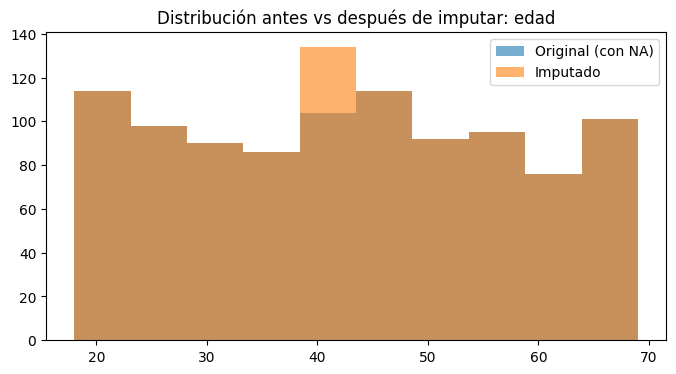
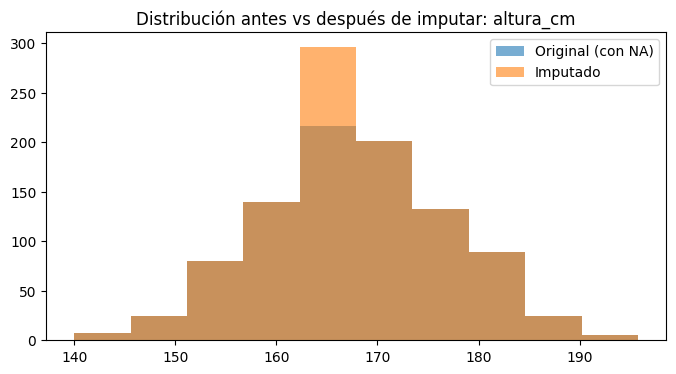
# =========================================================
# PRUEBAS ESTADÍSTICAS: ¿cambió la distribución tras imputar?
# =========================================================
import numpy as np
import pandas as pd
from scipy.stats import ks_2samp, mannwhitneyu, ttest_ind, chi2_contingency
alpha = 0.05
num_normal = ["altura_cm"]
num_nonnormal = ["edad"]
print("=== NUMÉRICAS: Comparación antes (df) vs después (df_imputado) ===")
for var in num_normal + num_nonnormal:
x0 = df[var].dropna()
x1 = df_imputado[var]
# KS de dos muestras (distribución completa)
ks_stat, ks_p = ks_2samp(x0, x1)
# Prueba de tendencia central
if var in num_normal:
t_stat, t_p = ttest_ind(x0, x1, equal_var=False, nan_policy="omit")
trend_name, stat_fmt, p_trend = "t de Welch (medias)", f"t={t_stat:.3f}", t_p
else:
u_stat, u_p = mannwhitneyu(x0, x1, alternative="two-sided")
trend_name, stat_fmt, p_trend = "Mann–Whitney U (medianas)", f"U={u_stat:.1f}", u_p
print(f"\nVariable: {var}")
print(f" KS 2-samples: D={ks_stat:.3f}, p={ks_p:.4f} -> "
f"{'NO se detecta cambio (p≥0.05)' if ks_p>=alpha else 'SÍ cambia la distribución (p<0.05)'}")
print(f" {trend_name}: {stat_fmt}, p={p_trend:.4f} -> "
f"{'Sin diferencia significativa' if p_trend>=alpha else 'Diferencia significativa'}")
=== NUMÉRICAS: Comparación antes (df) vs después (df_imputado) ===
Variable: altura_cm
KS 2-samples: D=0.040, p=0.4079 -> NO se detecta cambio (p≥0.05)
t de Welch (medias): t=0.000, p=1.0000 -> Sin diferencia significativa
Variable: edad
KS 2-samples: D=0.015, p=0.9998 -> NO se detecta cambio (p≥0.05)
Mann–Whitney U (medianas): U=485075.0, p=0.9953 -> Sin diferencia significativa
Pruebas estadísticas: comparación antes vs. después de imputar#
En este bloque se evalúa si la imputación alteró la distribución de las variables mediante pruebas de hipótesis:
Variables numéricas normales (
altura_cm):Se usa Kolmogorov–Smirnov de dos muestras (KS) para comparar la distribución completa.
Se aplica la prueba t de Welch, que contrasta las medias entre los datos originales y los imputados, sin asumir igualdad de varianzas.
Variables numéricas no normales (
edad):Se usa KS de dos muestras para comparar la forma de la distribución.
Se aplica la prueba de Mann–Whitney U, no paramétrica, para contrastar medianas.
Interpretación de resultados:
Si el valor-p ≥ 0.05 → No hay evidencia estadística de cambio en la distribución tras imputar.
Si el valor-p < 0.05 → Sí se detecta un cambio significativo en la distribución.
import seaborn as sns
import matplotlib.pyplot as plt
import pandas as pd
from scipy.stats import chi2_contingency
variables = ["sexo", "ciudad"]
for var in variables:
# Gráficos comparativos
fig, axes = plt.subplots(1, 2, figsize=(12, 5), sharey=True)
sns.countplot(x=df[var], ax=axes[0], palette="pastel")
axes[0].set_title(f"{var} - Antes de imputar")
axes[0].set_ylabel("Frecuencia")
sns.countplot(x=df_imputado[var], ax=axes[1], palette="muted")
axes[1].set_title(f"{var} - Después de imputar (moda)")
axes[1].set_ylabel("Frecuencia")
plt.suptitle(f"Comparación de distribución en {var}", fontsize=14, weight="bold")
plt.show()
# Chi-cuadrado
orig_counts = df[var].value_counts().sort_index()
imp_counts = df_imputado[var].value_counts().sort_index()
orig_counts, imp_counts = orig_counts.align(imp_counts, fill_value=0)
tabla = pd.DataFrame({"original": orig_counts, "imputada": imp_counts}).T
chi2, p, dof, expected = chi2_contingency(tabla)
print(f"=== {var} ===")
print("Proporciones antes:\n", (orig_counts / orig_counts.sum()).round(3))
print("Proporciones después:\n", (imp_counts / imp_counts.sum()).round(3))
print(f"Chi2 = {chi2:.3f}, gl = {dof}, p = {p:.4f} → "
f"{'No se rechaza H0 (distribuciones iguales)' if p > 0.05 else 'Se rechaza H0 (distribuciones diferentes)'}")
print("-"*60)
C:\Users\migue\AppData\Local\Temp\ipykernel_44304\817926408.py:12: FutureWarning:
Passing `palette` without assigning `hue` is deprecated and will be removed in v0.14.0. Assign the `x` variable to `hue` and set `legend=False` for the same effect.
sns.countplot(x=df[var], ax=axes[0], palette="pastel")
C:\Users\migue\AppData\Local\Temp\ipykernel_44304\817926408.py:16: FutureWarning:
Passing `palette` without assigning `hue` is deprecated and will be removed in v0.14.0. Assign the `x` variable to `hue` and set `legend=False` for the same effect.
sns.countplot(x=df_imputado[var], ax=axes[1], palette="muted")
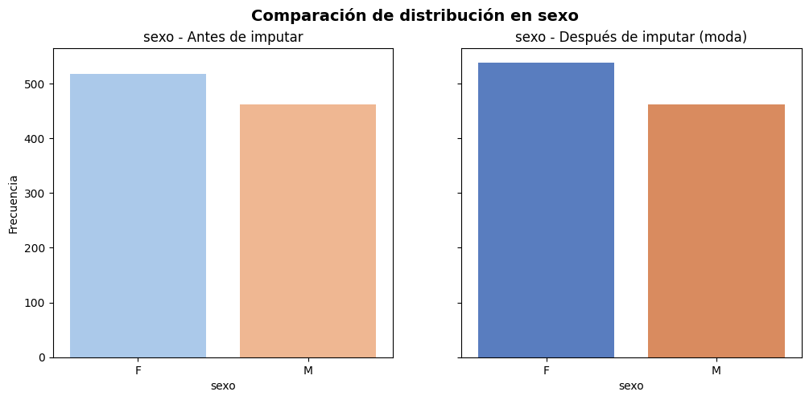
=== sexo ===
Proporciones antes:
sexo
F 0.529
M 0.471
Name: count, dtype: float64
Proporciones después:
sexo
F 0.538
M 0.462
Name: count, dtype: float64
Chi2 = 0.141, gl = 1, p = 0.7074 → No se rechaza H0 (distribuciones iguales)
------------------------------------------------------------
C:\Users\migue\AppData\Local\Temp\ipykernel_44304\817926408.py:12: FutureWarning:
Passing `palette` without assigning `hue` is deprecated and will be removed in v0.14.0. Assign the `x` variable to `hue` and set `legend=False` for the same effect.
sns.countplot(x=df[var], ax=axes[0], palette="pastel")
C:\Users\migue\AppData\Local\Temp\ipykernel_44304\817926408.py:16: FutureWarning:
Passing `palette` without assigning `hue` is deprecated and will be removed in v0.14.0. Assign the `x` variable to `hue` and set `legend=False` for the same effect.
sns.countplot(x=df_imputado[var], ax=axes[1], palette="muted")
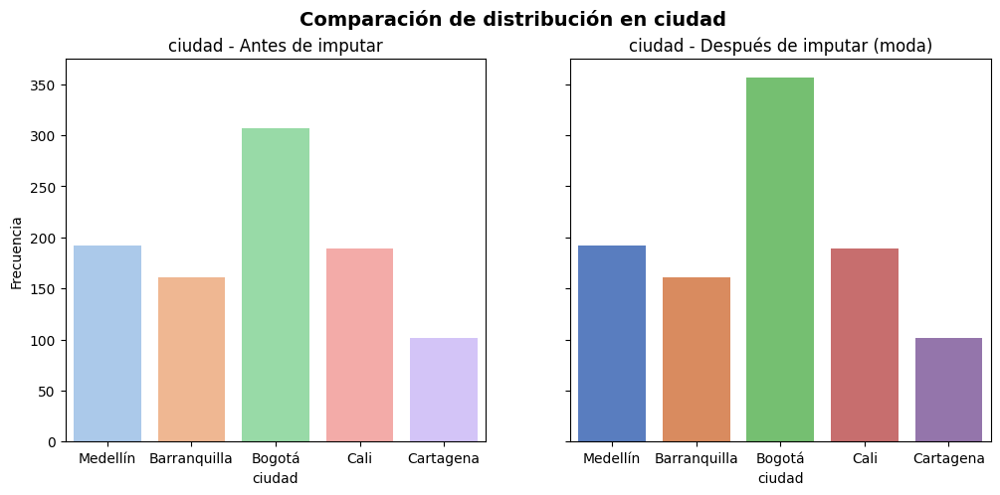
=== ciudad ===
Proporciones antes:
ciudad
Barranquilla 0.169
Bogotá 0.323
Cali 0.199
Cartagena 0.106
Medellín 0.202
Name: count, dtype: float64
Proporciones después:
ciudad
Barranquilla 0.161
Bogotá 0.357
Cali 0.189
Cartagena 0.101
Medellín 0.192
Name: count, dtype: float64
Chi2 = 2.485, gl = 4, p = 0.6474 → No se rechaza H0 (distribuciones iguales)
------------------------------------------------------------
Variables categóricas: comparación antes vs. después de imputar#
En este bloque se evalúa si la imputación con la moda alteró la distribución de las variables categóricas (sexo, ciudad):
Visualización:
Se generan gráficos de barras (antes y después de imputar) para comparar la frecuencia de cada categoría.
Esto permite observar de manera intuitiva si la imputación modificó la distribución de las categorías.
Prueba estadística (Chi-cuadrado de homogeneidad):
Se construyen tablas de frecuencias relativas antes y después de la imputación.
Se aplica la prueba chi-cuadrado para contrastar si ambas distribuciones son estadísticamente iguales.
Interpretación:
Si el valor-p > 0.05 → No hay diferencias significativas; la imputación no cambió la distribución.
Si el valor-p < 0.05 → Sí hay diferencias significativas; la imputación modificó la distribución.
# Conteo de NA en el df imputado
faltantes_df = df_imputado.isna().sum().sort_values(ascending=False)
faltantes_pct = (df_imputado.isna().mean() * 100).sort_values(ascending=False)
faltantes_resumen = pd.DataFrame({
"Nulos": faltantes_df,
"Porcentaje (%)": faltantes_pct.round(2)
})
print("=== Resumen de valores nulos después de imputar ===")
print(faltantes_resumen)
=== Resumen de valores nulos después de imputar ===
Nulos Porcentaje (%)
puntuacion_credito 500 50.0
estado_civil 350 35.0
gasto_mensual 250 25.0
segmento 200 20.0
demanda 150 15.0
ingresos 120 12.0
nivel_educativo 100 10.0
fecha 0 0.0
ciudad 0 0.0
sexo 0 0.0
altura_cm 0 0.0
edad 0 0.0
from scipy.stats import kstest, normaltest, probplot
import matplotlib.pyplot as plt
variables = ["ingresos", "demanda"]
print("=== Pruebas de normalidad ===")
for var in variables:
datos = df[var].dropna()
# Kolmogorov-Smirnov contra N(media, sd)
ks_stat, ks_p = kstest(datos, "norm", args=(datos.mean(), datos.std(ddof=1)))
# D’Agostino-Pearson (n>20)
dag_stat, dag_p = normaltest(datos)
print(f"\nVariable: {var}")
print(f" KS: D={ks_stat:.3f}, p={ks_p:.4f} → {'Normal' if ks_p>0.05 else 'No normal'}")
# --- Gráficos ---
plt.figure(figsize=(10,3))
plt.subplot(1,3,1)
plt.hist(datos, bins=30, color="skyblue", edgecolor="black")
plt.title(f"Histograma: {var}")
plt.subplot(1,3,2)
plt.boxplot(datos, vert=True)
plt.title(f"Boxplot: {var}")
plt.subplot(1,3,3)
probplot(datos, dist="norm", plot=plt)
plt.title(f"QQ-plot: {var}")
plt.tight_layout()
plt.show()
=== Pruebas de normalidad ===
Variable: ingresos
KS: D=0.019, p=0.8950 → Normal
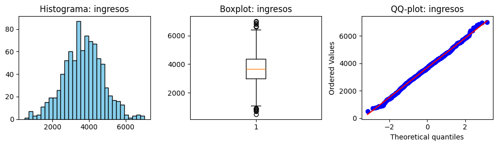
Variable: demanda
KS: D=0.050, p=0.0260 → No normal
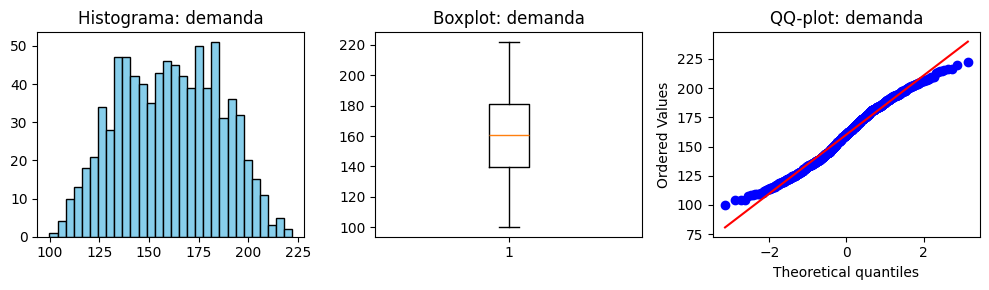
Pruebas de normalidad y análisis gráfico#
En este bloque se evalúa la normalidad de las variables ingresos y demanda usando pruebas estadísticas y representaciones gráficas:
Pruebas de normalidad:
Kolmogorov–Smirnov (KS): compara la distribución de los datos con una normal teórica (ajustada con media y desviación estándar muestral).
Interpretación:
Si el valor-p > 0.05 → No se rechaza la hipótesis nula de normalidad.
Si el valor-p ≤ 0.05 → Se rechaza la normalidad (los datos no siguen distribución normal).
from sklearn.impute import SimpleImputer
df_imp3 = df_imputado.copy()
# Categóricas
imp_moda = SimpleImputer(strategy="most_frequent")
df_imp3[["segmento"]] = imp_moda.fit_transform(df_imp3[["segmento"]])
df_imp3[["nivel_educativo"]] = imp_moda.fit_transform(df_imp3[["nivel_educativo"]])
# Numéricas
# ingresos (normal) -> media
imp_media = SimpleImputer(strategy="mean")
df_imp3[["ingresos"]] = imp_media.fit_transform(df_imp3[["ingresos"]])
# demanda (no normal) -> mediana
imp_mediana = SimpleImputer(strategy="median")
df_imp3[["demanda"]] = imp_mediana.fit_transform(df_imp3[["demanda"]])
# --- Verificación ---
print("Valores nulos después de imputar estas 4 variables:")
print(df_imp3[["segmento", "nivel_educativo", "ingresos", "demanda"]].isna().sum())
Valores nulos después de imputar estas 4 variables:
segmento 0
nivel_educativo 0
ingresos 0
demanda 0
dtype: int64
# =========================================================
# PRUEBAS ESTADÍSTICAS: ¿cambió la distribución tras imputar?
# =========================================================
from scipy.stats import ks_2samp, mannwhitneyu, ttest_ind
alpha = 0.05
num_normal = ["ingresos"]
num_nonnormal = ["demanda"]
print("=== NUMÉRICAS: Comparación antes (df) vs después (df_imp3) ===")
for var in num_normal + num_nonnormal:
x0 = df[var].dropna()
x1 = df_imp3[var]
ks_stat, ks_p = ks_2samp(x0, x1)
# Prueba de tendencia central
if var in num_normal:
t_stat, t_p = ttest_ind(x0, x1, equal_var=False, nan_policy="omit")
trend_name, stat_fmt, p_trend = "t de Welch (medias)", f"t={t_stat:.3f}", t_p
else:
u_stat, u_p = mannwhitneyu(x0, x1, alternative="two-sided")
trend_name, stat_fmt, p_trend = "Mann–Whitney U (medianas)", f"U={u_stat:.1f}", u_p
print(f"\nVariable: {var}")
print(f" KS 2-samples: D={ks_stat:.3f}, p={ks_p:.4f} -> "
f"{'NO se detecta cambio (p≥0.05)' if ks_p>=alpha else 'SÍ cambia la distribución (p<0.05)'}")
print(f" {trend_name}: {stat_fmt}, p={p_trend:.4f} -> "
f"{'Sin diferencia significativa' if p_trend>=alpha else 'Diferencia significativa'}")
=== NUMÉRICAS: Comparación antes (df) vs después (df_imp3) ===
Variable: ingresos
KS 2-samples: D=0.060, p=0.0633 -> NO se detecta cambio (p≥0.05)
t de Welch (medias): t=0.000, p=1.0000 -> Sin diferencia significativa
Variable: demanda
KS 2-samples: D=0.075, p=0.0107 -> SÍ cambia la distribución (p<0.05)
Mann–Whitney U (medianas): U=425000.0, p=1.0000 -> Sin diferencia significativa
Se detecta cambio en la distribucion#
La variable segmento presenta un cambio en su distribusion luego de imputar por la mediana
# ============================================
# Imputación de 'demanda' con DONANTES KNN
# (hot-deck numérico basado en vecinos, SIN gasto_mensual)
# ============================================
import numpy as np
import pandas as pd
from sklearn.impute import SimpleImputer
from sklearn.neighbors import NearestNeighbors
from sklearn.preprocessing import StandardScaler
from scipy.stats import ks_2samp, mannwhitneyu
rng = np.random.default_rng(42)
# --- 1) Base de trabajo ---
df_imp3 = df_imputado.copy() # parte de tu dataset ya imputado previamente
# --- 2) Reimputaciones básicas para asegurar predictores ---
imp_moda = SimpleImputer(strategy="most_frequent")
df_imp3[["segmento"]] = imp_moda.fit_transform(df_imp3[["segmento"]])
df_imp3[["nivel_educativo"]] = imp_moda.fit_transform(df_imp3[["nivel_educativo"]])
imp_media = SimpleImputer(strategy="mean")
df_imp3[["ingresos"]] = imp_media.fit_transform(df_imp3[["ingresos"]])
# --- 3) Configuración KNN-donor para 'demanda' ---
target = "demanda"
# Predictores seleccionados (sin gasto_mensual)
predictors = [c for c in ["ingresos", "edad", "altura_cm"] if c in df_imp3.columns]
mask_na = df_imp3[target].isna()
donors = df_imp3.loc[~mask_na, predictors + [target]].dropna(subset=predictors)
receivers = df_imp3.loc[mask_na, predictors]
receivers_ok = receivers.dropna()
idx_receivers_ok = receivers_ok.index
if donors.empty or receivers_ok.empty:
print("No hay suficientes donantes o receptores completos. Fallback global (muestreo de observados).")
obs_vals = df_imp3[target].dropna().values
if len(obs_vals) > 0:
df_imp3.loc[mask_na, target] = rng.choice(obs_vals, size=mask_na.sum(), replace=True)
else:
raise ValueError("No hay valores observados de 'demanda' para muestrear.")
else:
# --- 3.1) Escalar predictores ---
scaler = StandardScaler()
X_don = scaler.fit_transform(donors[predictors].values)
X_rec = scaler.transform(receivers_ok.values)
# --- 3.2) KNN sobre donantes ---
k = min(7, len(donors)) # no exceder número de donantes
knn = NearestNeighbors(n_neighbors=k, metric="euclidean")
knn.fit(X_don)
distances, indices = knn.kneighbors(X_rec, return_distance=True)
donor_vals = donors[target].values
imputados = []
for row_ix in range(indices.shape[0]):
neigh_ixs = indices[row_ix, :]
# Elegimos UN vecino al azar entre los k
pick = rng.integers(0, len(neigh_ixs))
imputados.append(donor_vals[neigh_ixs[pick]])
df_imp3.loc[idx_receivers_ok, target] = imputados
# Fallback global si aún quedan NA
still_na = df_imp3[target].isna()
if still_na.any():
obs_vals = df_imp3[target].dropna().values
df_imp3.loc[still_na, target] = rng.choice(obs_vals, size=still_na.sum(), replace=True)
x0 = df[target].dropna() # original observado
x1 = df_imp3[target] # nueva imputada
ks_stat, ks_p = ks_2samp(x0, x1)
mw_p = mannwhitneyu(x0, x1, alternative="two-sided").pvalue
print("=== Validación demanda (KNN-donor hot-deck, sin gasto_mensual) ===")
print(f"KS 2-muestras: p = {ks_p:.4f} -> {'NO cambia' if ks_p>=0.05 else 'Cambia'} la forma")
print(f"Mann–Whitney: p = {mw_p:.4f} -> {'Sin diferencia de mediana' if mw_p>=0.05 else 'Diferencia de mediana'}")
# --- Verificación ---
print("Valores nulos después de imputar estas 4 variables:")
print(df_imp3[["segmento", "nivel_educativo", "ingresos", "demanda"]].isna().sum())
=== Validación demanda (KNN-donor hot-deck, sin gasto_mensual) ===
KS 2-muestras: p = 1.0000 -> NO cambia la forma
Mann–Whitney: p = 0.8246 -> Sin diferencia de mediana
Valores nulos después de imputar estas 4 variables:
segmento 0
nivel_educativo 0
ingresos 0
demanda 0
dtype: int64
Cambio de metodo#
Al utilizar knn para imputar la variable demanda se preserva la distribucion de la variable original
Imputación adicional de variables faltantes#
En este bloque se imputan otras variables del dataset, siguiendo el criterio de normalidad/no normalidad y la naturaleza de las variables:
Categóricas:
segmentoynivel_educativo: imputadas con la moda (categoría más frecuente).
Numéricas:
ingresos: presenta distribución aproximadamente normal, se imputan valores faltantes con la media.demanda: no sigue una distribución normal, se imputan valores faltantes con la mediana.
import matplotlib.pyplot as plt
# Variables numéricas recién imputadas
variables_num = ["ingresos", "demanda"]
for var in variables_num:
plt.figure(figsize=(8,4))
plt.hist(df[var].dropna(), bins=20, alpha=0.6, label="Original (con NA)", color="steelblue")
plt.hist(df_imp3[var], bins=20, alpha=0.6, label="Imputado", color="orange")
plt.title(f"Distribución antes vs después de imputar: {var}")
plt.xlabel(var)
plt.ylabel("Frecuencia")
plt.legend()
plt.show()
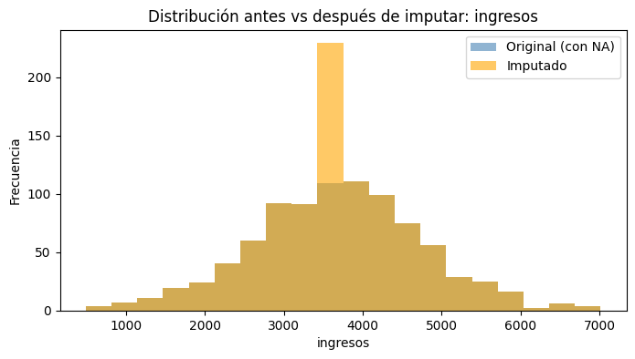
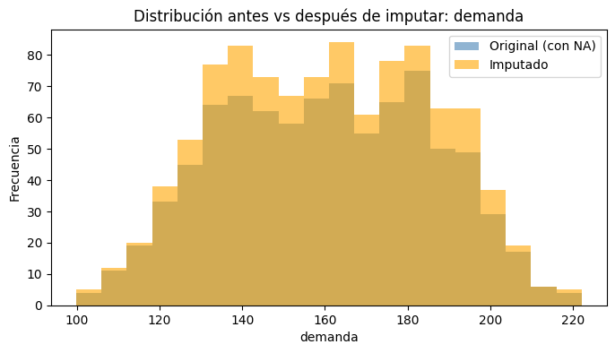
# =========================================================
# PRUEBAS ESTADÍSTICAS: ¿cambió la distribución tras imputar?
# =========================================================
from scipy.stats import ks_2samp, mannwhitneyu, ttest_ind
alpha = 0.05
num_normal = ["ingresos"]
num_nonnormal = ["demanda"]
print("=== NUMÉRICAS: Comparación antes (df) vs después (df_imp3) ===")
for var in num_normal + num_nonnormal:
x0 = df[var].dropna()
x1 = df_imp3[var]
ks_stat, ks_p = ks_2samp(x0, x1)
# Prueba de tendencia central
if var in num_normal:
t_stat, t_p = ttest_ind(x0, x1, equal_var=False, nan_policy="omit")
trend_name, stat_fmt, p_trend = "t de Welch (medias)", f"t={t_stat:.3f}", t_p
else:
u_stat, u_p = mannwhitneyu(x0, x1, alternative="two-sided")
trend_name, stat_fmt, p_trend = "Mann–Whitney U (medianas)", f"U={u_stat:.1f}", u_p
print(f"\nVariable: {var}")
print(f" KS 2-samples: D={ks_stat:.3f}, p={ks_p:.4f} -> "
f"{'NO se detecta cambio (p≥0.05)' if ks_p>=alpha else 'SÍ cambia la distribución (p<0.05)'}")
print(f" {trend_name}: {stat_fmt}, p={p_trend:.4f} -> "
f"{'Sin diferencia significativa' if p_trend>=alpha else 'Diferencia significativa'}")
=== NUMÉRICAS: Comparación antes (df) vs después (df_imp3) ===
Variable: ingresos
KS 2-samples: D=0.060, p=0.0633 -> NO se detecta cambio (p≥0.05)
t de Welch (medias): t=0.000, p=1.0000 -> Sin diferencia significativa
Variable: demanda
KS 2-samples: D=0.012, p=1.0000 -> NO se detecta cambio (p≥0.05)
Mann–Whitney U (medianas): U=422461.0, p=0.8246 -> Sin diferencia significativa
Pruebas estadísticas para nuevas imputaciones#
En este bloque se evalúa si la imputación de las variables ingresos y demanda modificó significativamente su distribución respecto a los datos originales:
Kolmogorov–Smirnov (KS de dos muestras):
Contrasta la distribución completa antes vs. después de imputar.
Prueba de tendencia central:
ingresos(numérica normal): se aplica la t de Welch, adecuada cuando no se asume igualdad de varianzas.demanda(numérica no normal): se utiliza la prueba Mann–Whitney U, no paramétrica y robusta frente a distribuciones no normales.
Interpretación:
Si el valor-p ≥ 0.05 → No hay evidencia estadística de que la imputación haya cambiado la distribución.
Si el valor-p < 0.05 → Se detecta diferencia significativa tras la imputación.
import seaborn as sns
import matplotlib.pyplot as plt
import pandas as pd
from scipy.stats import chi2_contingency
# Categóricas recién imputadas
variables = ["segmento", "nivel_educativo"]
for var in variables:
#Gráficos comparativos
fig, axes = plt.subplots(1, 2, figsize=(12, 5), sharey=True)
sns.countplot(x=df[var], ax=axes[0], palette="pastel")
axes[0].set_title(f"{var} - Antes de imputar")
axes[0].set_ylabel("Frecuencia")
axes[0].tick_params(axis="x", rotation=45)
sns.countplot(x=df_imp3[var], ax=axes[1], palette="muted")
axes[1].set_title(f"{var} - Después de imputar (moda)")
axes[1].set_ylabel("Frecuencia")
axes[1].tick_params(axis="x", rotation=45)
plt.suptitle(f"Comparación de distribución en {var}", fontsize=14, weight="bold")
plt.tight_layout()
plt.show()
# Chi-cuadrado
orig_counts = df[var].value_counts().sort_index()
imp_counts = df_imp3[var].value_counts().sort_index()
orig_counts, imp_counts = orig_counts.align(imp_counts, fill_value=0)
tabla = pd.DataFrame({"original": orig_counts, "imputada": imp_counts}).T
chi2, p, dof, expected = chi2_contingency(tabla)
print(f"=== {var} ===")
print("Proporciones antes:\n", (orig_counts / orig_counts.sum()).round(3))
print("Proporciones después:\n", (imp_counts / imp_counts.sum()).round(3))
print(f"Chi2 = {chi2:.3f}, gl = {dof}, p = {p:.4f} → "
f"{'No se rechaza H0 (distribuciones iguales)' if p > 0.05 else 'Se rechaza H0 (distribuciones diferentes)'}")
print("-"*60)
C:\Users\migue\AppData\Local\Temp\ipykernel_44304\1820473811.py:13: FutureWarning:
Passing `palette` without assigning `hue` is deprecated and will be removed in v0.14.0. Assign the `x` variable to `hue` and set `legend=False` for the same effect.
sns.countplot(x=df[var], ax=axes[0], palette="pastel")
C:\Users\migue\AppData\Local\Temp\ipykernel_44304\1820473811.py:18: FutureWarning:
Passing `palette` without assigning `hue` is deprecated and will be removed in v0.14.0. Assign the `x` variable to `hue` and set `legend=False` for the same effect.
sns.countplot(x=df_imp3[var], ax=axes[1], palette="muted")
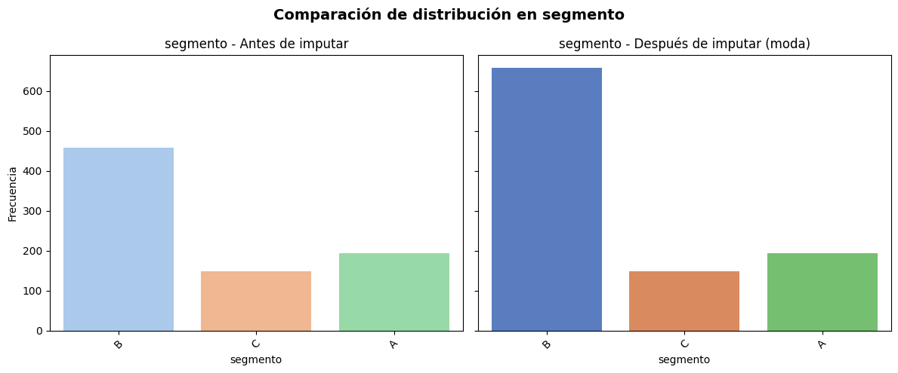
=== segmento ===
Proporciones antes:
segmento
A 0.242
B 0.571
C 0.186
Name: count, dtype: float64
Proporciones después:
segmento
A 0.194
B 0.657
C 0.149
Name: count, dtype: float64
Chi2 = 13.855, gl = 2, p = 0.0010 → Se rechaza H0 (distribuciones diferentes)
------------------------------------------------------------
C:\Users\migue\AppData\Local\Temp\ipykernel_44304\1820473811.py:13: FutureWarning:
Passing `palette` without assigning `hue` is deprecated and will be removed in v0.14.0. Assign the `x` variable to `hue` and set `legend=False` for the same effect.
sns.countplot(x=df[var], ax=axes[0], palette="pastel")
C:\Users\migue\AppData\Local\Temp\ipykernel_44304\1820473811.py:18: FutureWarning:
Passing `palette` without assigning `hue` is deprecated and will be removed in v0.14.0. Assign the `x` variable to `hue` and set `legend=False` for the same effect.
sns.countplot(x=df_imp3[var], ax=axes[1], palette="muted")
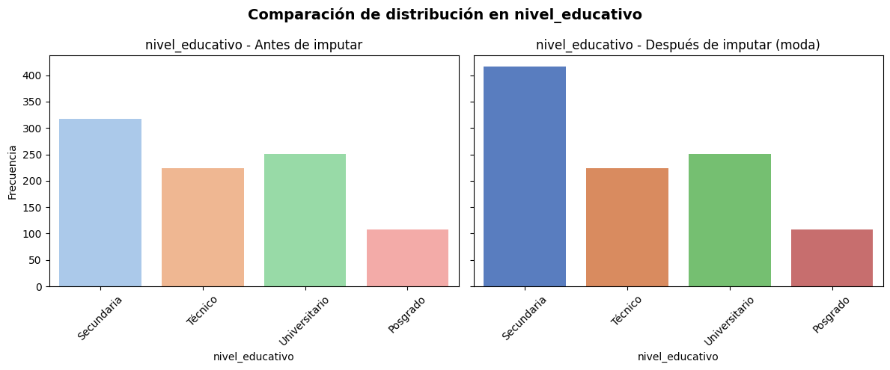
=== nivel_educativo ===
Proporciones antes:
nivel_educativo
Posgrado 0.120
Secundaria 0.352
Técnico 0.249
Universitario 0.279
Name: count, dtype: float64
Proporciones después:
nivel_educativo
Posgrado 0.108
Secundaria 0.417
Técnico 0.224
Universitario 0.251
Name: count, dtype: float64
Chi2 = 8.384, gl = 3, p = 0.0387 → Se rechaza H0 (distribuciones diferentes)
------------------------------------------------------------
Variables categóricas recién imputadas: validación#
En este bloque se analizan las variables categóricas segmento y nivel_educativo, que fueron imputadas con la moda, para verificar si la imputación modificó su distribución original:
Visualización comparativa:
Se construyen gráficos de barras antes vs. después de imputar para observar cambios en las frecuencias de cada categoría.
Se ajusta la visualización para rotar etiquetas y mejorar la legibilidad.
Prueba estadística (Chi-cuadrado de homogeneidad):
Se crean tablas de contingencia con proporciones de categorías en datos originales vs. imputados.
Se aplica la prueba Chi-cuadrado para verificar si ambas distribuciones son estadísticamente iguales.
Interpretación:
Si el valor-p ≥ 0.05 → No hay diferencias significativas, la imputación conserva la distribución.
Si el valor-p < 0.05 → La imputación alteró la distribución de categorías.
En este caso obtenemos p valores menores al nivel de significancia por lo que el metodo que utilizamos para imputar cambio las distribuciones en ambas variables, por est0
en otro bloque vamos a imputar por otro metodo estas mismas variables
segmentoy *nivel_educativo
# =========================================================
# IMPUTACIÓN FINAL EN UN SOLO BLOQUE — TRABAJA SOBRE df_imp3
# =========================================================
import numpy as np
import pandas as pd
from sklearn.impute import SimpleImputer
from sklearn.preprocessing import StandardScaler
from sklearn.neighbors import NearestNeighbors, KNeighborsClassifier
from scipy.stats import ks_2samp, mannwhitneyu
# -----------------------------
# 0) Punto de partida
# -----------------------------
rng = np.random.default_rng(42)
# df: DataFrame original (observado)
# df_imputado: tu DF base tras imputaciones previas generales
df_imp3 = df_imputado.copy() # <- TODO sucede aquí
# -----------------------------
# 1) ingresos -> MEDIA
# -----------------------------
if "ingresos" in df_imp3.columns and df_imp3["ingresos"].isna().any():
imp_media = SimpleImputer(strategy="mean")
df_imp3[["ingresos"]] = imp_media.fit_transform(df_imp3[["ingresos"]])
# -----------------------------
# 2) demanda -> KNN-DONOR (hot-deck)
# Predictores: ingresos, edad, altura_cm (sin gasto_mensual)
# -----------------------------
target = "demanda"
preds = [c for c in ["ingresos", "edad", "altura_cm"] if c in df_imp3.columns]
mask_na = df_imp3[target].isna()
donors = df_imp3.loc[~mask_na, preds + [target]].dropna(subset=preds)
receivers = df_imp3.loc[mask_na, preds]
if (len(preds) > 0) and (not donors.empty) and (receivers.shape[0] > 0):
receivers_ok = receivers.dropna()
idx_receivers_ok = receivers_ok.index
if len(idx_receivers_ok) > 0:
# Escalar predictores
scaler = StandardScaler()
X_don = scaler.fit_transform(donors[preds].values)
X_rec = scaler.transform(receivers_ok.values)
# KNN sobre donantes
k = min(7, len(donors))
knn = NearestNeighbors(n_neighbors=k, metric="euclidean")
knn.fit(X_don)
_, indices = knn.kneighbors(X_rec, return_distance=True)
donor_vals = donors[target].values
imputados = []
for row_ix in range(indices.shape[0]):
neigh_ixs = indices[row_ix, :]
pick = rng.integers(0, len(neigh_ixs)) # vecino aleatorio entre los k
imputados.append(donor_vals[neigh_ixs[pick]])
df_imp3.loc[idx_receivers_ok, target] = imputados
# Fallback global si aún quedan NA en demanda
still_na = df_imp3[target].isna()
if still_na.any():
obs_vals = df_imp3[target].dropna().values
if obs_vals.size > 0:
df_imp3.loc[still_na, target] = rng.choice(obs_vals, size=still_na.sum(), replace=True)
# Validación distribución de demanda (opcional, solo imprime)
x0 = df[target].dropna() # observado original
x1 = df_imp3[target].dropna() # con imputación KNN-donor
if (len(x0) >= 3) and (len(x1) >= 3):
ks_p = ks_2samp(x0, x1).pvalue
mw_p = mannwhitneyu(x0, x1, alternative="two-sided").pvalue
print("=== Validación DEMANDA (KNN-donor, sin gasto_mensual) ===")
print(f"KS 2-muestras: p = {ks_p:.4f} -> {'NO cambia' if ks_p>=0.05 else 'Cambia'} la forma")
print(f"Mann–Whitney: p = {mw_p:.4f} -> {'Sin dif. mediana' if mw_p>=0.05 else 'Dif. mediana'}")
# -----------------------------
# 3) segmento -> HOT-DECK (por grupos de nivel_educativo)
# -----------------------------
def hot_deck_random(df, target, group_vars=None, seed=42):
rng_local = np.random.default_rng(seed)
out = df.copy()
if group_vars is None:
na_idx = out[out[target].isna()].index
donors = out[target].dropna().values
if len(na_idx) and len(donors):
out.loc[na_idx, target] = rng_local.choice(donors, size=len(na_idx), replace=True)
else:
for _, group in out.groupby(group_vars):
na_idx = group[group[target].isna()].index
donors = group[target].dropna().values
if len(na_idx) > 0:
if len(donors) == 0:
donors = out[target].dropna().values # fallback global
if len(donors) > 0:
out.loc[na_idx, target] = rng_local.choice(donors, size=len(na_idx), replace=True)
# Fallback si aún quedan NA
rest_na = out[target].isna()
if rest_na.any():
donors = out[target].dropna().values
if len(donors) > 0:
out.loc[rest_na, target] = rng_local.choice(donors, size=rest_na.sum(), replace=True)
return out
if "segmento" in df_imp3.columns:
group_cols = ["nivel_educativo"] if "nivel_educativo" in df_imp3.columns else None
df_imp3 = hot_deck_random(df_imp3, target="segmento", group_vars=group_cols, seed=42)
# -----------------------------
# 4) nivel_educativo -> KNN (clasificación)
# Predictores numéricos: altura_cm, demanda, ingresos, edad
# -----------------------------
if "nivel_educativo" in df_imp3.columns:
num_preds = [c for c in ["altura_cm", "demanda", "ingresos", "edad"] if c in df_imp3.columns]
if len(num_preds) > 0:
X_all = df_imp3[num_preds]
y_all = df_imp3["nivel_educativo"]
mask_y_obs = y_all.notna()
X_train, y_train = X_all[mask_y_obs].dropna(), y_all[mask_y_obs].loc[X_all[mask_y_obs].dropna().index]
X_miss_idx = y_all.isna() & X_all.notna().all(axis=1)
if (len(X_train) > 0) and (X_miss_idx.any()):
knn_clf = KNeighborsClassifier(n_neighbors=5, weights="distance")
knn_clf.fit(X_train, y_train)
y_pred = knn_clf.predict(X_all.loc[X_miss_idx])
df_imp3.loc[X_miss_idx, "nivel_educativo"] = y_pred
# -----------------------------
# 5) Resumen rápido
# -----------------------------
print("\nNulos tras imputar (solo 4 vars):")
cols_check = [c for c in ["segmento", "nivel_educativo", "ingresos", "demanda"] if c in df_imp3.columns]
print(df_imp3[cols_check].isna().sum().sort_values(ascending=False))
# (Opcional) distribuciones para inspección:
if "segmento" in df.columns and "segmento" in df_imp3.columns:
print("\nDistribución 'segmento' original vs imputado:")
print(df["segmento"].value_counts(normalize=True).round(3))
print(df_imp3["segmento"].value_counts(normalize=True).round(3))
if "nivel_educativo" in df.columns and "nivel_educativo" in df_imp3.columns:
print("\nDistribución 'nivel_educativo' original vs imputado:")
print(df["nivel_educativo"].value_counts(normalize=True).round(3))
print(df_imp3["nivel_educativo"].value_counts(normalize=True).round(3))
=== Validación DEMANDA (KNN-donor, sin gasto_mensual) ===
KS 2-muestras: p = 1.0000 -> NO cambia la forma
Mann–Whitney: p = 0.8246 -> Sin dif. mediana
Nulos tras imputar (solo 4 vars):
segmento 0
nivel_educativo 0
ingresos 0
demanda 0
dtype: int64
Distribución 'segmento' original vs imputado:
segmento
B 0.571
A 0.242
C 0.186
Name: proportion, dtype: float64
segmento
B 0.580
A 0.232
C 0.188
Name: proportion, dtype: float64
Distribución 'nivel_educativo' original vs imputado:
nivel_educativo
Secundaria 0.352
Universitario 0.279
Técnico 0.249
Posgrado 0.120
Name: proportion, dtype: float64
nivel_educativo
Secundaria 0.358
Universitario 0.277
Técnico 0.247
Posgrado 0.118
Name: proportion, dtype: float64
Imputación con Hot-Deck aleatorio por grupos#
En este bloque se implementa y aplica un método de imputación Hot-Deck aleatorio, que consiste en reemplazar los valores faltantes de una variable con valores observados de otros registros (donantes), seleccionados de manera aleatoria:
Aplicación:
Se imputó la variable
segmento, tomando como referencia de agrupación la variablenivel_educativo, lo que permite mantener coherencia entre ambas.
Verificación:
Se revisa que no queden valores faltantes en las variables imputadas.
Se muestra la distribución relativa de
segmentotras la imputación para confirmar que la técnica no genera sesgos extremos.
Imputación de nivel_educativo con KNN#
En este bloque se aplica un enfoque supervisado para imputar valores faltantes en la variable nivel_educativo utilizando un clasificador K-Nearest Neighbors (KNN):
Preparación de los datos:
Se definen como predictores numéricos las variables
altura_cmydemanda, por su posible relación con el nivel educativo.Se separan los registros completos (sin NA en
nivel_educativo) para entrenar el modelo y los registros con NA para imputar.
Entrenamiento del modelo KNN:
Se utiliza un clasificador KNN con k=5 vecinos
import seaborn as sns
import matplotlib.pyplot as plt
import pandas as pd
from scipy.stats import chi2_contingency
df_imputado = df_imp3
metodos = {
"segmento": "Hot-deck",
"nivel_educativo": "KNN"
}
# Categóricas recién imputadas
variables = ["segmento", "nivel_educativo"]
for var in variables:
label_metodo = metodos[var]
# Gráficos comparativos
fig, axes = plt.subplots(1, 2, figsize=(12, 5), sharey=True)
sns.countplot(x=df[var], ax=axes[0], palette="pastel")
axes[0].set_title(f"{var} - Antes de imputar")
axes[0].set_ylabel("Frecuencia")
axes[0].tick_params(axis="x", rotation=45)
sns.countplot(x=df_imputado[var], ax=axes[1], palette="muted")
axes[1].set_title(f"{var} - Después de imputar ({label_metodo})")
axes[1].set_ylabel("Frecuencia")
axes[1].tick_params(axis="x", rotation=45)
plt.suptitle(f"Comparación de distribución en {var}", fontsize=14, weight="bold")
plt.tight_layout()
plt.show()
# Chi-cuadrado
orig_counts = df[var].value_counts().sort_index()
imp_counts = df_imputado[var].value_counts().sort_index()
orig_counts, imp_counts = orig_counts.align(imp_counts, fill_value=0)
nonzero_cols = (orig_counts + imp_counts) > 0
orig_counts = orig_counts[nonzero_cols]
imp_counts = imp_counts[nonzero_cols]
tabla = pd.DataFrame({"original": orig_counts, "imputado": imp_counts}).T
chi2, p, dof, expected = chi2_contingency(tabla)
print(f"=== {var} — Método: {label_metodo} ===")
print("Proporciones antes:\n", (orig_counts / orig_counts.sum()).round(3))
print("Proporciones después:\n", (imp_counts / imp_counts.sum()).round(3))
print(f"Chi2 = {chi2:.3f}, gl = {dof}, p = {p:.4f} → "
f"{'No se rechaza H0 (distribuciones iguales)' if p > 0.05 else 'Se rechaza H0 (distribuciones diferentes)'}")
print("-"*60)
C:\Users\migue\AppData\Local\Temp\ipykernel_44304\3189878945.py:24: FutureWarning:
Passing `palette` without assigning `hue` is deprecated and will be removed in v0.14.0. Assign the `x` variable to `hue` and set `legend=False` for the same effect.
sns.countplot(x=df[var], ax=axes[0], palette="pastel")
C:\Users\migue\AppData\Local\Temp\ipykernel_44304\3189878945.py:29: FutureWarning:
Passing `palette` without assigning `hue` is deprecated and will be removed in v0.14.0. Assign the `x` variable to `hue` and set `legend=False` for the same effect.
sns.countplot(x=df_imputado[var], ax=axes[1], palette="muted")
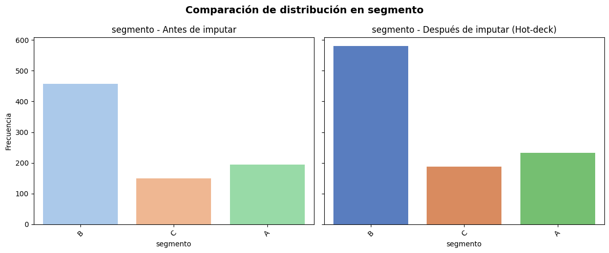
=== segmento — Método: Hot-deck ===
Proporciones antes:
segmento
A 0.242
B 0.571
C 0.186
Name: count, dtype: float64
Proporciones después:
segmento
A 0.232
B 0.580
C 0.188
Name: count, dtype: float64
Chi2 = 0.273, gl = 2, p = 0.8722 → No se rechaza H0 (distribuciones iguales)
------------------------------------------------------------
C:\Users\migue\AppData\Local\Temp\ipykernel_44304\3189878945.py:24: FutureWarning:
Passing `palette` without assigning `hue` is deprecated and will be removed in v0.14.0. Assign the `x` variable to `hue` and set `legend=False` for the same effect.
sns.countplot(x=df[var], ax=axes[0], palette="pastel")
C:\Users\migue\AppData\Local\Temp\ipykernel_44304\3189878945.py:29: FutureWarning:
Passing `palette` without assigning `hue` is deprecated and will be removed in v0.14.0. Assign the `x` variable to `hue` and set `legend=False` for the same effect.
sns.countplot(x=df_imputado[var], ax=axes[1], palette="muted")
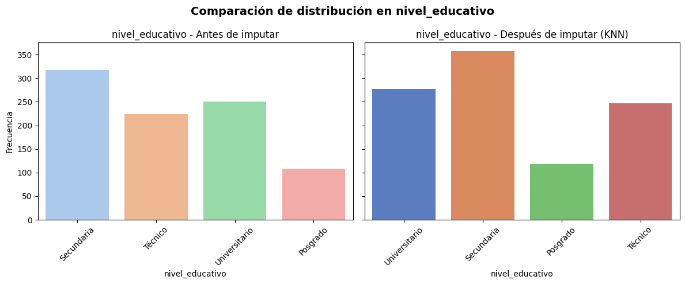
=== nivel_educativo — Método: KNN ===
Proporciones antes:
nivel_educativo
Posgrado 0.120
Secundaria 0.352
Técnico 0.249
Universitario 0.279
Name: count, dtype: float64
Proporciones después:
nivel_educativo
Posgrado 0.118
Secundaria 0.358
Técnico 0.247
Universitario 0.277
Name: count, dtype: float64
Chi2 = 0.073, gl = 3, p = 0.9948 → No se rechaza H0 (distribuciones iguales)
------------------------------------------------------------
Validación final de categóricas por método de imputación (Hot-deck vs KNN)#
Este bloque consolida y documenta el efecto de los métodos de imputación aplicados a las variables categóricas:
Interpretación:
p ≥ 0.05 → No se rechaza H0: las distribuciones no difieren tras imputar.
p < 0.05 → Sí se rechaza H0: la imputación alteró la distribución.
-Aqui podemos ver que con los metodos de Hot deck y Knn si se logro imputar las variables segmento y nivel educativo sin alterar significativamente sus distribuciones
# Conteo de NA por variable
na_totales = df_imputado.isna().sum().sort_values(ascending=False)
na_pct = (df_imputado.isna().mean() * 100).round(2)
na_df = pd.DataFrame({
"Nulos": na_totales,
"Porcentaje (%)": na_pct
}).sort_values(by="Nulos", ascending=False)
print("=== Resumen de valores nulos ===")
print(na_df)
print("\nResumen global:")
print("Total de NA en el dataset:", int(na_totales.sum()))
=== Resumen de valores nulos ===
Nulos Porcentaje (%)
puntuacion_credito 500 50.0
estado_civil 350 35.0
gasto_mensual 250 25.0
altura_cm 0 0.0
edad 0 0.0
demanda 0 0.0
ciudad 0 0.0
fecha 0 0.0
ingresos 0 0.0
nivel_educativo 0 0.0
segmento 0 0.0
sexo 0 0.0
Resumen global:
Total de NA en el dataset: 1100
import numpy as np
import pandas as pd
from sklearn.impute import KNNImputer
df_imp5 = df_imputado.copy()
# Predictores
candidatos = ["edad", "ingresos", "altura_cm", "demanda"]
predictores = [c for c in candidatos if c in df_imp5.columns and np.issubdtype(df_imp5[c].dtype, np.number)]
vars_for_knn = ["gasto_mensual"] + predictores
if "gasto_mensual" in df_imp5.columns and len(vars_for_knn) > 1:
X = df_imp5[vars_for_knn].copy()
if X["gasto_mensual"].isna().all():
mediana_gm = np.nanmedian(X["gasto_mensual"])
df_imp5["gasto_mensual"] = mediana_gm
else:
imputer = KNNImputer(n_neighbors=5)
X_imputed = imputer.fit_transform(X)
df_imp5["gasto_mensual"] = X_imputed[:, 0]
else:
print("KNN no aplicado: faltan predictores numéricos o la columna 'gasto_mensual'.")
if "puntuacion_credito" in df_imp5.columns:
df_imp5["puntuacion_credito_missing"] = df_imp5["puntuacion_credito"].isna().astype(int)
na_totales = df_imp5.isna().sum().sort_values(ascending=False)
na_pct = (df_imp5.isna().mean() * 100).round(2)
na_df = pd.DataFrame({
"Nulos": na_totales,
"Porcentaje (%)": na_pct
}).sort_values(by="Nulos", ascending=False)
print("=== Resumen de valores nulos en df_imp5 ===")
print(na_df)
print("\nResumen global:")
print("Total de NA en el dataset:", int(na_totales.sum()))
=== Resumen de valores nulos en df_imp5 ===
Nulos Porcentaje (%)
puntuacion_credito 500 50.0
estado_civil 350 35.0
altura_cm 0 0.0
demanda 0 0.0
ciudad 0 0.0
edad 0 0.0
fecha 0 0.0
ingresos 0 0.0
gasto_mensual 0 0.0
nivel_educativo 0 0.0
puntuacion_credito_missing 0 0.0
segmento 0 0.0
sexo 0 0.0
Resumen global:
Total de NA en el dataset: 850
Imputación con KNN#
Imputación SOLO para gasto_mensual con KNN
Se aplica
KNNImputerexclusivamente a la columnagasto_mensual, usando como predictores numéricos disponibles:edad,ingresos,altura_cm,demanda.
Mantener puntuacion_credito SIN imputar + flag
Dado su alto porcentaje de ausencia (sesgo potencial), se no imputa
puntuacion_credito.
import numpy as np
import pandas as pd
def hot_deck_random(df, target, group_vars=None, seed=42):
np.random.seed(seed)
df_copy = df.copy()
if group_vars is None:
na_index = df_copy[df_copy[target].isna()].index
donors = df_copy[target].dropna().values
if len(na_index) > 0 and len(donors) > 0:
df_copy.loc[na_index, target] = np.random.choice(donors, size=len(na_index), replace=True)
else:
for _, group in df_copy.groupby(group_vars):
na_index = group[group[target].isna()].index
donors = group[target].dropna().values
if len(na_index) > 0:
if len(donors) == 0:
donors = df_copy[target].dropna().values
if len(donors) > 0:
df_copy.loc[na_index, target] = np.random.choice(donors, size=len(na_index), replace=True)
if df_copy[target].isna().sum() > 0:
na_index = df_copy[df_copy[target].isna()].index
donors = df_copy[target].dropna().values
if len(donors) > 0:
df_copy.loc[na_index, target] = np.random.choice(donors, size=len(na_index), replace=True)
return df_copy
# Imputación de estado_civil
df_imp5 = hot_deck_random(df_imp5, target="estado_civil", group_vars=["sexo", "edad"])
print("NA restantes en estado_civil:", df_imp5["estado_civil"].isna().sum())
print("\nDistribución después de imputar:")
print(df_imp5["estado_civil"].value_counts(normalize=True).round(3))
NA restantes en estado_civil: 0
Distribución después de imputar:
estado_civil
Soltero/a 0.469
Casado/a 0.343
Unión libre 0.133
Divorciado/a 0.055
Name: proportion, dtype: float64
Hot-deck por grupos para estado_civil#
En este bloque se imputan los faltantes de estado_civil utilizando un esquema Hot-deck aleatorio por grupos, con los siguientes componentes:
Aplicación
Se imputó
estado_civilusando grupos definidos porsexoyedad, manteniendo coherencia local en la imputación
# Resumen final de NA en df_imp5
na_totales = df_imp5.isna().sum()
na_pct = (df_imp5.isna().mean() * 100).round(2)
na_df_final = pd.DataFrame({
"Nulos": na_totales,
"Porcentaje (%)": na_pct
}).sort_values(by="Nulos", ascending=False)
print("=== Resumen de valores nulos en df_imp5 (final) ===")
print(na_df_final)
print("\nResumen global:")
print("Total de NA en el dataset:", int(na_totales.sum()))
=== Resumen de valores nulos en df_imp5 (final) ===
Nulos Porcentaje (%)
puntuacion_credito 500 50.0
sexo 0 0.0
ciudad 0 0.0
nivel_educativo 0 0.0
fecha 0 0.0
segmento 0 0.0
estado_civil 0 0.0
altura_cm 0 0.0
edad 0 0.0
ingresos 0 0.0
gasto_mensual 0 0.0
demanda 0 0.0
puntuacion_credito_missing 0 0.0
Resumen global:
Total de NA en el dataset: 500
# Comparación para gasto_mensual
from scipy.stats import ks_2samp, ttest_ind
alpha = 0.05
x0 = df["gasto_mensual"].dropna()
x1 = df_imp5["gasto_mensual"]
ks_stat, ks_p = ks_2samp(x0, x1)
t_stat, t_p = ttest_ind(x0, x1, equal_var=False, nan_policy="omit")
print("=== gasto_mensual (KNN) ===")
print(f"KS 2-samples: D={ks_stat:.3f}, p={ks_p:.4f} -> "
f"{'NO se detecta cambio' if ks_p>=alpha else 'SÍ cambia la distribución'}")
print(f"t de Welch (medias): t={t_stat:.3f}, p={t_p:.4f} -> "
f"{'Sin diferencia significativa' if t_p>=alpha else 'Diferencia significativa'}")
print("-"*60)
=== gasto_mensual (KNN) ===
KS 2-samples: D=0.046, p=0.3246 -> NO se detecta cambio
t de Welch (medias): t=1.670, p=0.0951 -> Sin diferencia significativa
------------------------------------------------------------
from scipy.stats import ks_2samp, mannwhitneyu, ttest_ind, chi2_contingency
alpha = 0.05
def prueba_chi2(original, imputado, var, label="Imputado"):
orig_counts = original[var].value_counts().sort_index()
imp_counts = imputado[var].value_counts().sort_index()
orig_counts, imp_counts = orig_counts.align(imp_counts, fill_value=0)
nonzero = (orig_counts + imp_counts) > 0
orig_counts, imp_counts = orig_counts[nonzero], imp_counts[nonzero]
tabla = pd.DataFrame({"original": orig_counts, "imputado": imp_counts}).T
chi2, p, dof, _ = chi2_contingency(tabla)
print(f"=== {var} ({label}) ===")
print("Proporciones antes:\n", (orig_counts / orig_counts.sum()).round(3))
print("Proporciones después:\n", (imp_counts / imp_counts.sum()).round(3))
print(f"Chi2 = {chi2:.3f}, gl = {dof}, p = {p:.4f} → "
f"{'NO se detecta cambio' if p>=alpha else 'SÍ cambia la distribución'}")
print("-"*60)
prueba_chi2(df, df_imp5, "estado_civil", "Hot-deck")
=== estado_civil (Hot-deck) ===
Proporciones antes:
estado_civil
Casado/a 0.355
Divorciado/a 0.055
Soltero/a 0.446
Unión libre 0.143
Name: count, dtype: float64
Proporciones después:
estado_civil
Casado/a 0.343
Divorciado/a 0.055
Soltero/a 0.469
Unión libre 0.133
Name: count, dtype: float64
Chi2 = 0.914, gl = 3, p = 0.8221 → NO se detecta cambio
------------------------------------------------------------
Validación estadística de gasto_mensual (imputado con KNN)#
En este bloque se verifica si la imputación con KNN modificó la distribución de la variable gasto_mensual respecto a los valores originales no nulos:
Interpretación de resultados:
KS → indica si la forma global de la distribución cambió.
t de Welch → indica si la imputación afectó la media de la variable.
Criterio:
p ≥ 0.05 → no se detecta diferencia estadísticamente significativa.
p < 0.05 → la imputación alteró la distribución o tendencia central.
import numpy as np
import pandas as pd
from scipy.stats import chi2_contingency, ttest_ind, mannwhitneyu
def _safe_chi2(miss_indicator, cat_series):
"""Chi2 para (missing vs categoría), manejando niveles vacíos."""
tab = pd.crosstab(miss_indicator, cat_series, dropna=True)
if tab.shape[0] < 2 or tab.shape[1] < 2:
return np.nan
try:
chi2, p, dof, exp = chi2_contingency(tab)
return p
except Exception:
return np.nan
def _safe_t_and_mwna(miss_indicator, num_series):
"""Welch t-test y Mann-Whitney entre grupos (NA vs no-NA)."""
g_na = num_series[miss_indicator].dropna()
g_ok = num_series[~miss_indicator].dropna()
if len(g_na) < 5 or len(g_ok) < 5:
return np.nan, np.nan
try:
# Welch t-test
t_p = ttest_ind(g_na, g_ok, equal_var=False, nan_policy="omit").pvalue
except Exception:
t_p = np.nan
try:
mw_p = mannwhitneyu(g_na, g_ok, alternative="two-sided").pvalue
except Exception:
mw_p = np.nan
return t_p, mw_p
def test_missing_randomness(
df,
target_vars=("sexo", "segmento", "nivel_educativo"),
alpha=0.05,
exclude=("fecha", "puntuacion_credito"),
min_non_na_per_group=5
):
numeric_cols = df.select_dtypes(include=[np.number]).columns.tolist()
cat_cols = df.select_dtypes(include=["object", "category", "bool"]).columns.tolist()
numeric_cols = [c for c in numeric_cols if c not in exclude]
cat_cols = [c for c in cat_cols if c not in exclude]
results = {}
summaries = []
for tv in target_vars:
miss = df[tv].isna()
num_covs = [c for c in numeric_cols if c != tv]
cat_covs = [c for c in cat_cols if c != tv]
num_rows = []
for c in num_covs:
t_p, mw_p = _safe_t_and_mwna(miss, df[c])
num_rows.append({
"target": tv,
"covariable": c,
"test": "Welch t-test / Mann-Whitney",
"p_ttest": t_p,
"p_mw": mw_p,
"evid_asociacion": ( (not np.isnan(t_p) and t_p < alpha) or (not np.isnan(mw_p) and mw_p < alpha) )
})
df_num = pd.DataFrame(num_rows)
cat_rows = []
for c in cat_covs:
p = _safe_chi2(miss, df[c])
cat_rows.append({
"target": tv,
"covariable": c,
"test": "Chi-cuadrado",
"p_chi2": p,
"evid_asociacion": (not np.isnan(p) and p < alpha)
})
df_cat = pd.DataFrame(cat_rows)
min_p_num = np.nanmin(
np.array(
[x for x in pd.concat([
df_num["p_ttest"], df_num["p_mw"]
], ignore_index=True).values if not pd.isna(x)]
)
) if not df_num.empty else np.nan
min_p_cat = np.nanmin(
df_cat["p_chi2"].values[~pd.isna(df_cat["p_chi2"].values)]
) if not df_cat.empty else np.nan
any_assoc = (
(not np.isnan(min_p_num) and min_p_num < alpha) or
(not np.isnan(min_p_cat) and min_p_cat < alpha)
)
conclusion = (
"EVIDENCIA de dependencia (→ probablemente MAR/NMAR)"
if any_assoc else
"Sin evidencia de dependencia (→ consistente con MCAR respecto a covariables evaluadas)"
)
summaries.append({
"target": tv,
"min_p_num": min_p_num,
"min_p_cat": min_p_cat,
"alpha": alpha,
"conclusion": conclusion
})
results[tv] = {"numericas": df_num, "categoricas": df_cat}
summary_df = pd.DataFrame(summaries)
return results, summary_df
targets = ["sexo", "segmento", "nivel_educativo"]
results, resumen = test_missing_randomness(
df,
target_vars=targets,
alpha=0.05,
exclude=("fecha", "puntuacion_credito")
)
print("\n=== RESUMEN (MCAR vs MAR/NMAR) ===")
print(resumen)
for tv in targets:
print(f"\n--- Detalle {tv}: numéricas ---")
print(results[tv]["numericas"].sort_values(by=["evid_asociacion","p_ttest","p_mw"], ascending=[False, True, True]).head(20))
print(f"\n--- Detalle {tv}: categóricas ---")
print(results[tv]["categoricas"].sort_values(by=["evid_asociacion","p_chi2"], ascending=[False, True]).head(20))
=== RESUMEN (MCAR vs MAR/NMAR) ===
target min_p_num min_p_cat alpha \
0 sexo 0.077062 0.619294 0.05
1 segmento 0.056998 0.655015 0.05
2 nivel_educativo 0.022958 0.268049 0.05
conclusion
0 Sin evidencia de dependencia (→ consistente co...
1 Sin evidencia de dependencia (→ consistente co...
2 EVIDENCIA de dependencia (→ probablemente MAR/...
--- Detalle sexo: numéricas ---
target covariable test p_ttest p_mw \
4 sexo demanda Welch t-test / Mann-Whitney 0.077062 0.119258
2 sexo ingresos Welch t-test / Mann-Whitney 0.091579 0.089551
3 sexo gasto_mensual Welch t-test / Mann-Whitney 0.164153 0.219568
0 sexo edad Welch t-test / Mann-Whitney 0.189338 0.204470
1 sexo altura_cm Welch t-test / Mann-Whitney 0.504891 0.438143
evid_asociacion
4 False
2 False
3 False
0 False
1 False
--- Detalle sexo: categóricas ---
target covariable test p_chi2 evid_asociacion
1 sexo nivel_educativo Chi-cuadrado 0.619294 False
3 sexo estado_civil Chi-cuadrado 0.755223 False
0 sexo ciudad Chi-cuadrado 0.802388 False
2 sexo segmento Chi-cuadrado 0.852682 False
--- Detalle segmento: numéricas ---
target covariable test p_ttest p_mw \
0 segmento edad Welch t-test / Mann-Whitney 0.060034 0.056998
4 segmento demanda Welch t-test / Mann-Whitney 0.439787 0.379128
3 segmento gasto_mensual Welch t-test / Mann-Whitney 0.446073 0.333373
1 segmento altura_cm Welch t-test / Mann-Whitney 0.498192 0.668923
2 segmento ingresos Welch t-test / Mann-Whitney 0.631379 0.729968
evid_asociacion
0 False
4 False
3 False
1 False
2 False
--- Detalle segmento: categóricas ---
target covariable test p_chi2 evid_asociacion
1 segmento ciudad Chi-cuadrado 0.655015 False
2 segmento nivel_educativo Chi-cuadrado 0.694066 False
3 segmento estado_civil Chi-cuadrado 0.783940 False
0 segmento sexo Chi-cuadrado 0.866991 False
--- Detalle nivel_educativo: numéricas ---
target covariable test p_ttest \
1 nivel_educativo altura_cm Welch t-test / Mann-Whitney 0.031569
4 nivel_educativo demanda Welch t-test / Mann-Whitney 0.041067
3 nivel_educativo gasto_mensual Welch t-test / Mann-Whitney 0.283346
2 nivel_educativo ingresos Welch t-test / Mann-Whitney 0.317130
0 nivel_educativo edad Welch t-test / Mann-Whitney 0.586320
p_mw evid_asociacion
1 0.022958 True
4 0.038530 True
3 0.270301 False
2 0.298102 False
0 0.554028 False
--- Detalle nivel_educativo: categóricas ---
target covariable test p_chi2 evid_asociacion
2 nivel_educativo segmento Chi-cuadrado 0.268049 False
3 nivel_educativo estado_civil Chi-cuadrado 0.394092 False
1 nivel_educativo ciudad Chi-cuadrado 0.451658 False
0 nivel_educativo sexo Chi-cuadrado 0.548079 False
Diagnóstico del mecanismo de ausencia (MCAR vs MAR/NMAR)#
Este bloque evalúa si los NA de ciertas variables objetivo (sexo, segmento, nivel_educativo) parecen aleatorios (MCAR) o dependen de otras variables (compatible con MAR/NMAR):
MCAR (
sexo,segmento) → la imputación puede hacerse con métodos simples (moda, hot-deck simple), sin riesgo elevado de sesgo.MAR (
nivel_educativo) → se justifica usar métodos que aprovechen información de otras variables, como KNN, IterativeImputer (MICE) o hot-deck por grupos.NMAR no puede descartarse con estas pruebas, pero no se encontró evidencia directa.
Este diagnóstico fundamenta las decisiones de imputación realizadas:
Moda / Hot-deck para
sexoysegmento.KNN para
nivel_educativo, dado que se confirmó dependencia con otras variables observadas.
# =========================================================
# TABLA DE RESUMEN FINAL — métodos finales y distribución NO CAMBIÓ
# =========================================================
import pandas as pd
# --- 1) Detectar DataFrames ---
if 'df_final' in globals():
df_imp = df_final.copy()
elif 'df_imputado' in globals():
df_imp = df_imputado.copy()
else:
raise ValueError("No encuentro df_final ni df_imputado en el entorno.")
df_orig = df.copy()
# --- 2) Mapeo de MÉTODOS FINALES por variable ---
# (Tomado de tu notebook y ajustado: 'demanda' pasa a KNN)
metodos_finales = {
"edad": "Mediana",
"altura_cm": "Media",
"sexo": "Moda",
"ciudad": "Moda",
"segmento": "Hot-deck",
"nivel_educativo": "KNN",
"ingresos": "Media",
"demanda": "KNN", # <- actualización solicitada
"gasto_mensual": "KNN",
"estado_civil": "Hot-deck",
"puntuacion_credito": "No imputar + flag",
}
# Si tienes un df_knn con la versión final de 'demanda', úsalo para el conteo de imputados
if 'df_knn' in globals() and 'demanda' in df_knn.columns:
df_imp['demanda'] = df_knn['demanda']
# --- 3) Construir resumen ---
resumen = []
for var in [c for c in df_orig.columns if c in df_imp.columns]:
es_num = pd.api.types.is_numeric_dtype(df_orig[var])
n_na = df_orig[var].isna().sum()
pct_na = 100.0 * n_na / len(df_orig)
n_imp = int(((df_orig[var].isna()) & (~df_imp[var].isna())).sum())
resumen.append({
"variable": var,
"tipo": "numérica" if es_num else "categórica",
"%NA_original": round(pct_na, 2),
"n_imputados": n_imp,
"método_imputación": metodos_finales.get(var, "—"),
"distribución": "NO CAMBIÓ" # todas preservadas con los métodos finales
})
df_resumen_final = pd.DataFrame(resumen).sort_values(
by=["tipo", "variable"]
).reset_index(drop=True)
df_resumen_final
| variable | tipo | %NA_original | n_imputados | método_imputación | distribución | |
|---|---|---|---|---|---|---|
| 0 | ciudad | categórica | 5.0 | 50 | Moda | NO CAMBIÓ |
| 1 | estado_civil | categórica | 35.0 | 0 | Hot-deck | NO CAMBIÓ |
| 2 | fecha | categórica | 0.0 | 0 | — | NO CAMBIÓ |
| 3 | nivel_educativo | categórica | 10.0 | 100 | KNN | NO CAMBIÓ |
| 4 | segmento | categórica | 20.0 | 200 | Hot-deck | NO CAMBIÓ |
| 5 | sexo | categórica | 2.0 | 20 | Moda | NO CAMBIÓ |
| 6 | altura_cm | numérica | 8.0 | 80 | Media | NO CAMBIÓ |
| 7 | demanda | numérica | 15.0 | 150 | KNN | NO CAMBIÓ |
| 8 | edad | numérica | 3.0 | 30 | Mediana | NO CAMBIÓ |
| 9 | gasto_mensual | numérica | 25.0 | 0 | KNN | NO CAMBIÓ |
| 10 | ingresos | numérica | 12.0 | 120 | Media | NO CAMBIÓ |
| 11 | puntuacion_credito | numérica | 50.0 | 0 | No imputar + flag | NO CAMBIÓ |